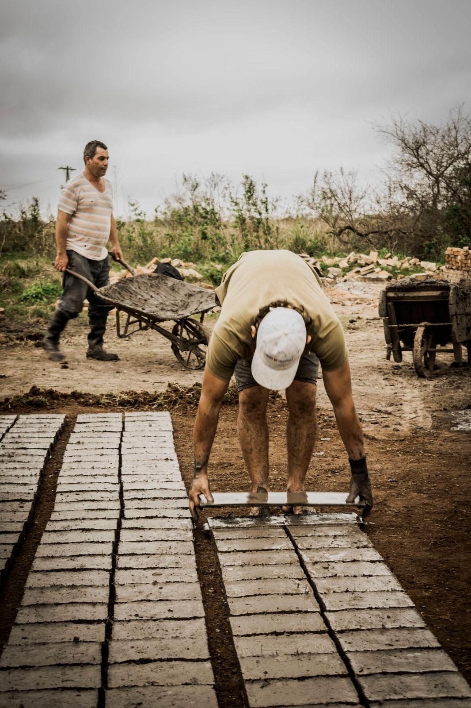

The crew
About Ledger & Course
A small High Point masonry company. We take on work we can stand behind, and we show up when we say we will.

Since 2011
A High Point crew, not a call center
Calvin Reed started Ledger & Course after years laying brick for other crews in Guilford County. He named it for the work itself: a ledger course that carries the load, and every course that follows it, laid true.
We are still a small outfit — Calvin, a foreman, and a short list of masons we trust. We take the jobs we can finish well, not every job that comes in. Most of our work is still in High Point, Jamestown, Archdale, and the rest of the Triad.
This is a sample company written for a portfolio site. Calvin Reed is a fictional owner, and the history above is invented for this demo.
How a job goes
From the first call to the last broom
-
01
Site walk
We come look at the lot, the grade, and how you want to use the space. Bring photos of work you like if you have them.
-
02
Written estimate
You get a scope, materials, a schedule window, and a price. Nothing starts until you approve it and a deposit is set.
-
03
Build
We protect the house, set the base, and lay the work. You will have a point of contact, not a rotating set of subcontractors.
-
04
Walkthrough
We walk it with you, fix punch-list items, haul our debris, and leave you the paperwork for the materials we used.
From the yard
What clients say
Sample quotes written for this portfolio site. These are not real reviews.
-
“They reset a patio that had been dumping water toward the foundation for years. The pitch is right, and they left the beds cleaner than they found them.”
-
“The seating wall and fire pit were done in a week and a half. Calvin told us the truth about what the slope could hold, which I appreciated.”
-
“Matched the old brick on our stoop better than I expected. They showed up when they said, which is rarer than it should be.”
Want us to look at your yard?
We will come out, walk it with you, and send a written estimate. No charge for the visit.